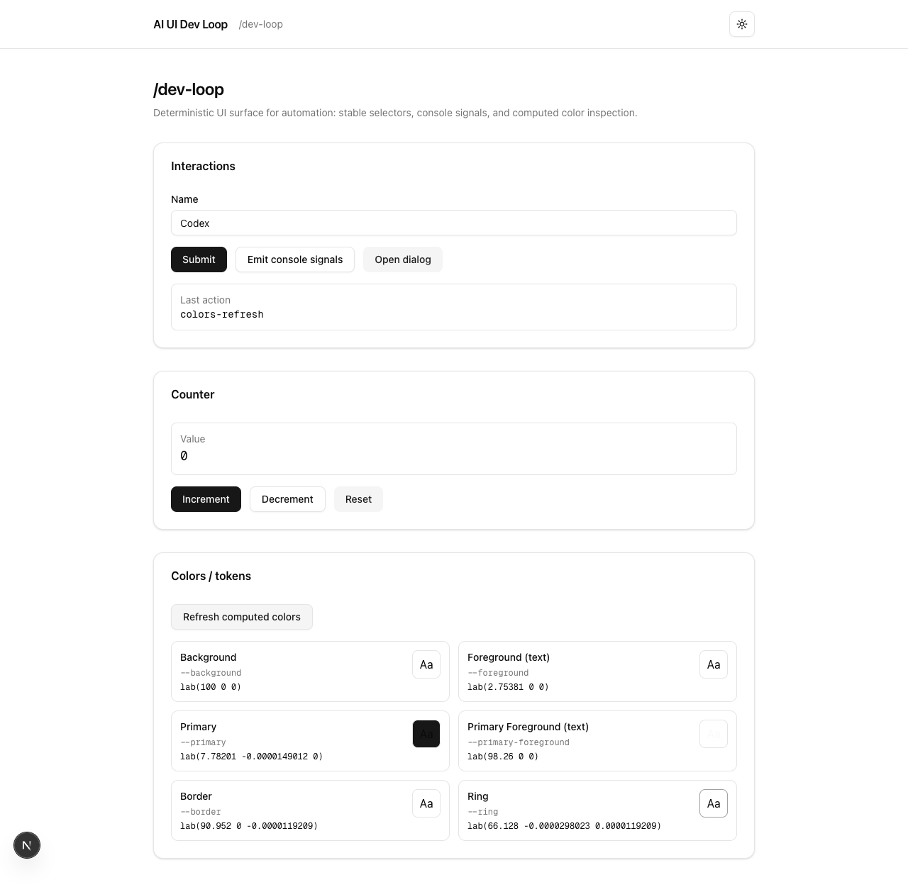

Public demo
Use the hosted app when you want immediate hands-on access without setup.
https://dev-loop-beta.vercel.appAI-assisted UI development loop
ai-ui-dev-loop is a demo-first template for verifying UI
changes through a deterministic browser surface, Playwright checks,
and MCP-driven observability.

Most UI work still relies on manually bouncing between code, browser state, and screenshots. This repo shows a tighter loop: a browser surface designed for automation, a reproducible local activation path, and a verifier that proves console, network, and computed-style signals are actually observable.
/dev-loopStart from a minimal Next.js + shadcn setup that already has stable automation hooks, a theme toggle, and browser-facing verification patterns.
Study how a repo can separate readiness checks, app tests, public demo publication, and repo-owned MCP verification without conflating them.
Try the hosted app immediately, then inspect how the same interactions are validated locally.
/dev-loop.
pnpm activate from the repo root.
pnpm dev, then run pnpm mcp:verify.
pnpm activate
pnpm dev
pnpm e2e
pnpm mcp:verifyUse the hosted app when you want immediate hands-on access without setup.
https://dev-loop-beta.vercel.appUse the README and knowledge docs for commands, troubleshooting, and implementation context.
Repository homeUse Playwright for app behavior and the MCP sidecar for observability-specific checks.
pnpm e2e and pnpm mcp:verify
The sidecar MCP verifier is the repo-owned observability contract. It does not depend on Codex-native MCP transport being available in your environment.
/api/health?probe=dev-loop
This site is published from the tracked docs/ directory through a GitHub Actions workflow.
If the workflow does not publish on first run, the exact repository-level action is:
In GitHub, open Settings → Pages and set the source to GitHub Actions.
After that, pushes to the default branch can publish the explainer automatically.